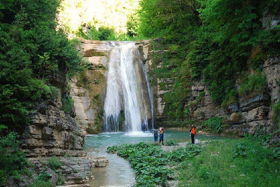
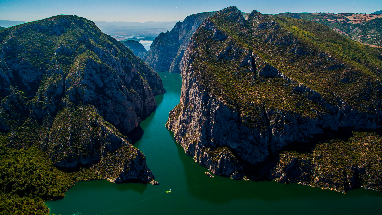
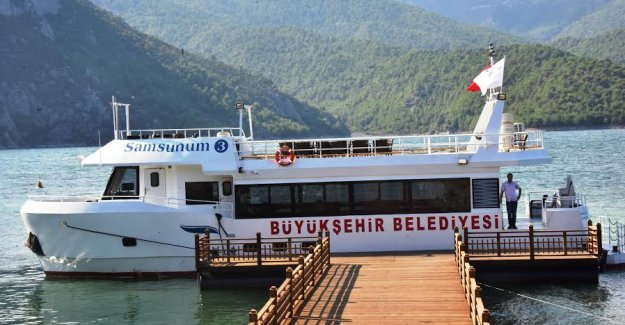

Bandýrma Vapuru Müzesi
Mustafa Kemal Atatürk’ü kurmaylarýyla birlikte 9. Ordu Müfettiþi olarak Ýstanbul’dan Samsun‘a getiren Bandýrma Vapuru, aslýna uygun olarak yeniden inþa edilerek Bandýrma Vapuru Müzesi adýyla ziyaretçilerini aðýrlýyor.
Samsun’un Canik ilçesinde, 18 Mayýs 2003 tarihinde açýlan müze, Baðýmsýz Türkiye Cumhuriyeti’ne giden yolda çok önemli bir görevi yerine getirerek tarihteki yerini alan geminin birebir aynýsýdýr.
Bafra’da bulunan Akalan Þelaleleri, ayný ismi taþýdýðý Akalan Köyü sýnýrlarý içerisindedir.Büyüklü küçüklü tam 18 þelaleden oluþmaktadýr. Þelaleler 15 metre yükseklikten düþmektedir. Çevresindeki bitki örtüsünün zenginliði arasýnda piknik veya doða sporlarý yapýlabilir.
Samsun-Atatürk Bulvarý üzerindeki iskelede bulunan Atatürk’ün heykeli, þehrin simgelerinden biridir.19 Mayýs 1919 yýlýnda Atatürk’ün Bandýrma Vapuru’ndan indiði iskelenin önünde bulunan Ýlk Adým Heykeli, Atatürk’ün doðumunun 100. yýlýnda yapýlmýþtýr.Milli Mücadele’nin ilk yýllarýnda Samsun’a giden Atatürk’ün ilk adým attýðý yer olan anýt, Mimar Seçkin Viter tarafýndan tasarlanýp yapýlmýþtýr.
Kýzýlýrmak üzerinde bulunan ve 1.5 kilometre uzunluðundaki Türkiye'nin ikinci büyük su kanyonu yerli ve yabancý turistleri aðýrlýyor. Turistler, doða yürüyüþü, tekne gezileri ve kano yaparak eþsiz güzelliðin tadýný çýkarýyor.


Akalan Þelaleleri

Ýlk Adým Anýtý – Onur Anýtý

Vezirköprü Þahinkaya Kanyonu

